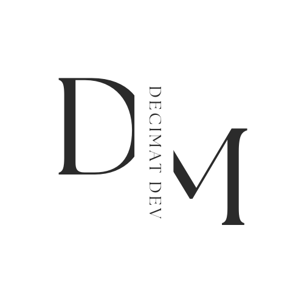

Ariba Nadir - Projects
Ariba Nadir - Projects
Comming Soon
Note
You will find in this page the moste commun script of some projects, some projects will be added in thise session also.
Preformatted
. . .Technology & Code
 the supervision tool created in two years by nadir ariba, finally finished on 06/01/2023 is mainly created in Php for the main information and above all for authentication and user connection, the programming language "php" is also an important instrument in the creation of the Aribams supervision tool, it makes it possible to provide several personal and contextual information but also to provide the network information of the integrated machines, the "php" programming language is of course connected to multiple database like firebase but also Mysql which is a very important tool that gives ariba machines security a unique strength but also an impressive speed, the ariba machines security database is therefore created first in a simple way (it's is to say in a structural way called manual or constructional), then in the second time of other algorithmic function its add to the project to allow to implement and to allow to have additional information and to have more information for the Ariba Machine Security monitoring tool user, for additional information, atarobas can also add modifications to user computers such as (UAC) to be able to execute additional scripts created and managed in batch (mainly managed by the cmd command line), this is important to add additional information that php cannot provide,other important scripts created in JS and bootstrap are of course put in place to ensure the visual functioning of the tool, but also other programming languages are important such as Python which allows to really complete the product and to make it make a tool global, there are also obviously other languages such as java but also kotlin and a few dozen libraries to ensure the proper functioning of the tool but also to be able to manage the applications which make it possible to receive the information emitted by the aribams platform and which will be send in real time on the application to the user's phone, other knowledge is necessary for the operation of the tool is to know the operation of some basic php files like php.ini or other information as knowledge in the hardware and also in the parameter files of the other tools used.
the supervision tool created in two years by nadir ariba, finally finished on 06/01/2023 is mainly created in Php for the main information and above all for authentication and user connection, the programming language "php" is also an important instrument in the creation of the Aribams supervision tool, it makes it possible to provide several personal and contextual information but also to provide the network information of the integrated machines, the "php" programming language is of course connected to multiple database like firebase but also Mysql which is a very important tool that gives ariba machines security a unique strength but also an impressive speed, the ariba machines security database is therefore created first in a simple way (it's is to say in a structural way called manual or constructional), then in the second time of other algorithmic function its add to the project to allow to implement and to allow to have additional information and to have more information for the Ariba Machine Security monitoring tool user, for additional information, atarobas can also add modifications to user computers such as (UAC) to be able to execute additional scripts created and managed in batch (mainly managed by the cmd command line), this is important to add additional information that php cannot provide,other important scripts created in JS and bootstrap are of course put in place to ensure the visual functioning of the tool, but also other programming languages are important such as Python which allows to really complete the product and to make it make a tool global, there are also obviously other languages such as java but also kotlin and a few dozen libraries to ensure the proper functioning of the tool but also to be able to manage the applications which make it possible to receive the information emitted by the aribams platform and which will be send in real time on the application to the user's phone, other knowledge is necessary for the operation of the tool is to know the operation of some basic php files like php.ini or other information as knowledge in the hardware and also in the parameter files of the other tools used.
Les projets Decimat et Mediteranya, are projects based on simple authentication scripts and logical self-structuring, but also important APIs for the proper functioning of websites on the one hand, but also Android or ios mobile applications, but above all scripts and also (very important) APIs important for payment methods to use such as scripts for payment by PayPal but also payment by Visa card, MasterCard but also and above all in CIB and even directly by post or by Bank, because it was a big problem either for Algerian workers but also for people who seek to work online in a secure or perhaps anonymous way, You can therefore look for a person who works for you on the decimat.com site, which also allows you to master your projects to be tested by professional testers and an entire team who will come and manage your needs. you can also find services of all kinds, all using any mode of payment, the cib includes, devices for the Mediteranya site, which starts from the same principle but for freelancers, that is to say that you can offer your services or work directly on our site and with our company and be remunerated with any mode of payment, obviously including CIB cards or postal or bank payments .